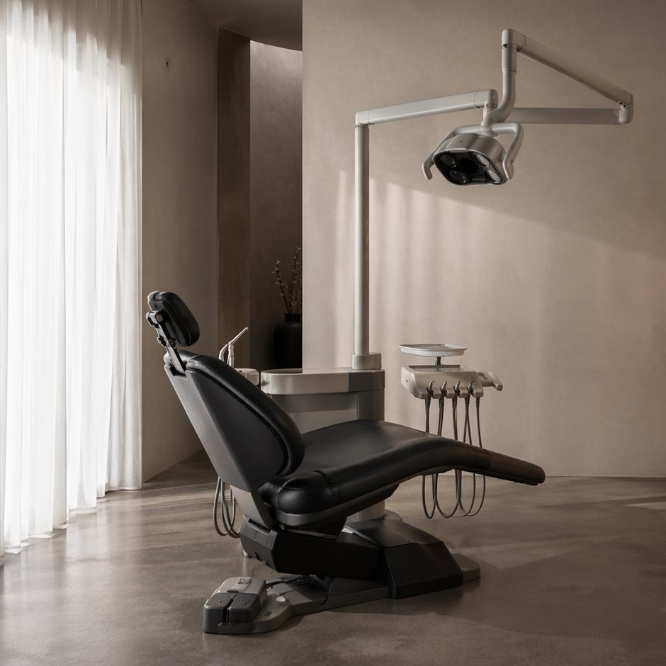

Notre équipe
Des praticiens dévoués à votre sourire

Dr. Sophie Marchal
Dentiste principale
Dr. Thomas Hertz
Orthodontiste
« Trop de patients repoussent leurs soins par appréhension. J'ai voulu créer un cabinet où l'on prend le temps d'expliquer avant d'agir — pour que la confiance précède le soin, et non l'inverse. »
Après des années à voir des patients reporter des soins simples par peur, le Dr. Sophie Marchal décide de repenser entièrement l'expérience du cabinet : moins de blouses blanches intimidantes, plus d'explications et de temps accordé à chacun.
Sérenia ouvre rue de la Convention, pensé comme un lieu apaisant : lumière douce, matières naturelles, salle d'attente conçue pour désamorcer l'anxiété plutôt que l'entretenir.
Arrivée des Drs Thomas Hertz et Lina Weiss, choisis autant pour leur expertise que pour leur approche pédagogique et rassurante avec les patients anxieux.
Sérenia continue d'accueillir en priorité les patients qui redoutent le dentiste — c'est précisément pour eux que le cabinet a été pensé.

Nous croyons qu'un soin dentaire commence par une conversation, pas par une fraise. Chaque rendez-vous est pensé pour réduire l'appréhension, avec des technologies modernes et un accompagnement humain à chaque étape.
Patients accompagnés
Années d'écoute
Suivi personnalisé
Des praticiens expérimentés qui délivrent des soins de confiance.
Un accompagnement à chaque étape de votre traitement.
Des soins personnalisés, pensés pour vous.
Un cabinet réactif, y compris en urgence.
Découvrez notre équipe ou prenez directement rendez-vous.